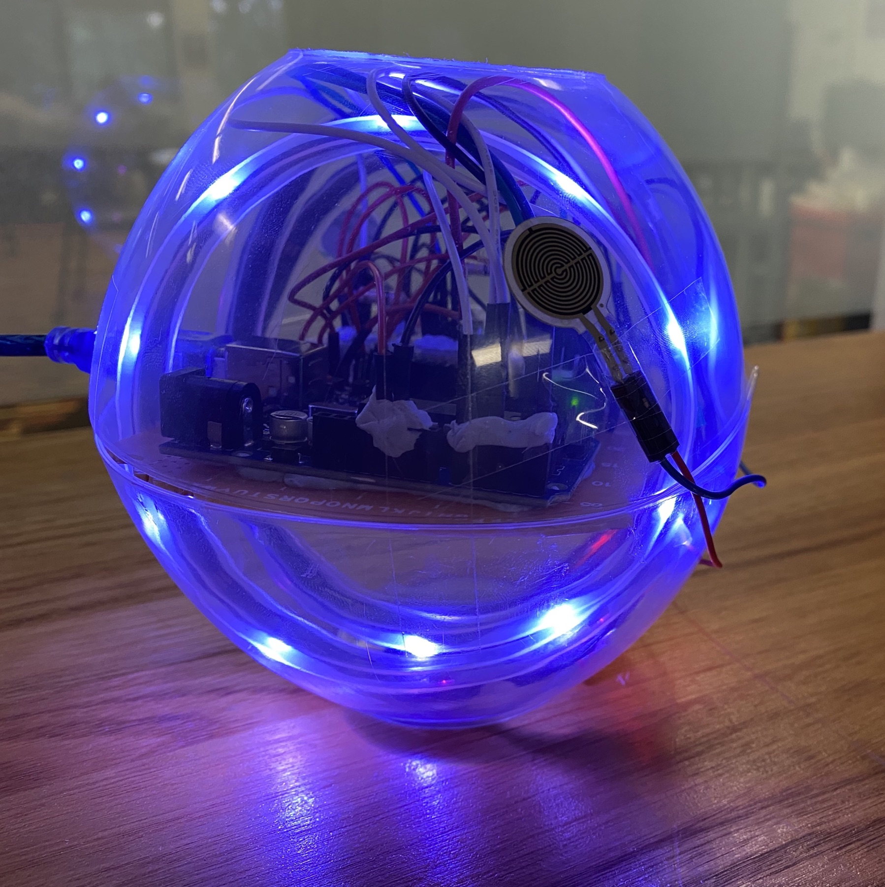
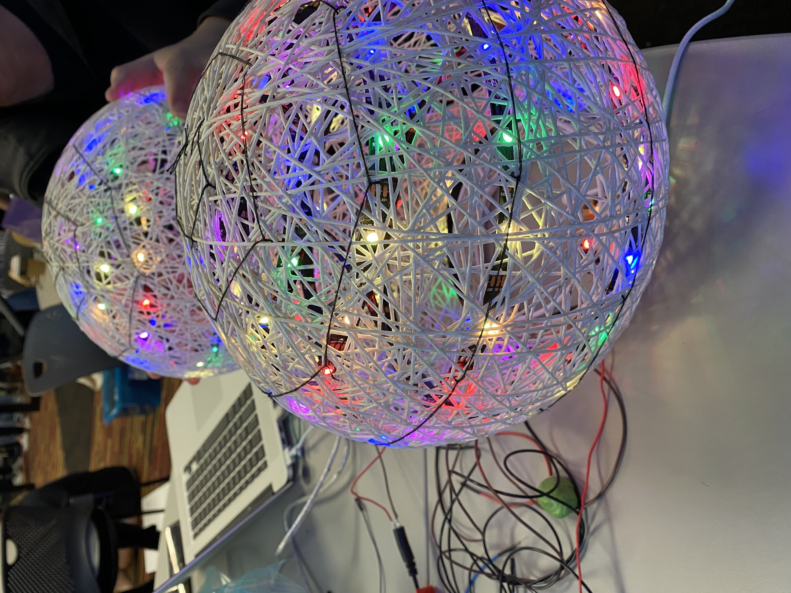
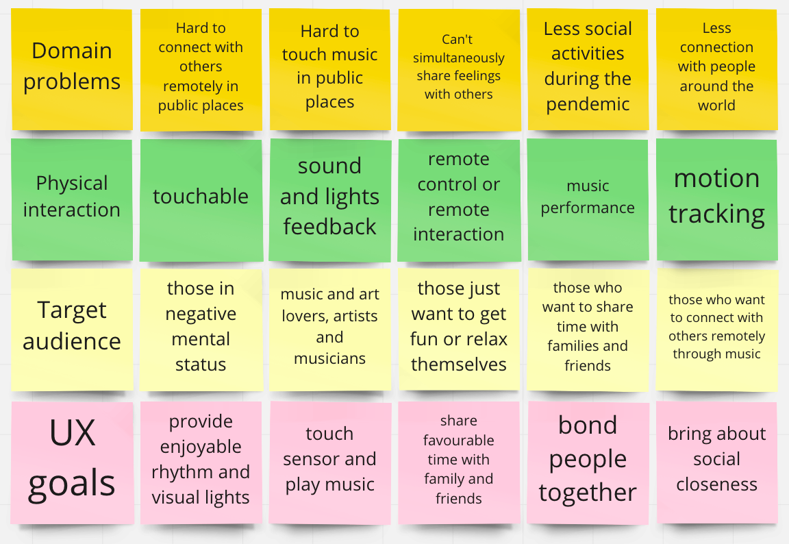
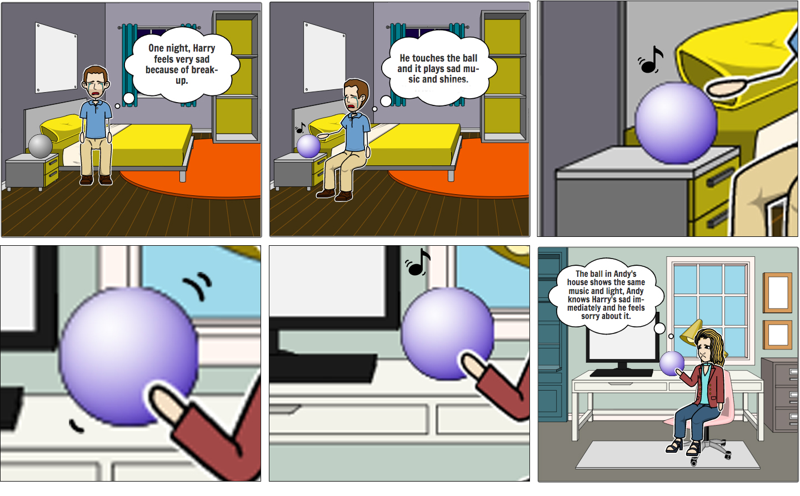
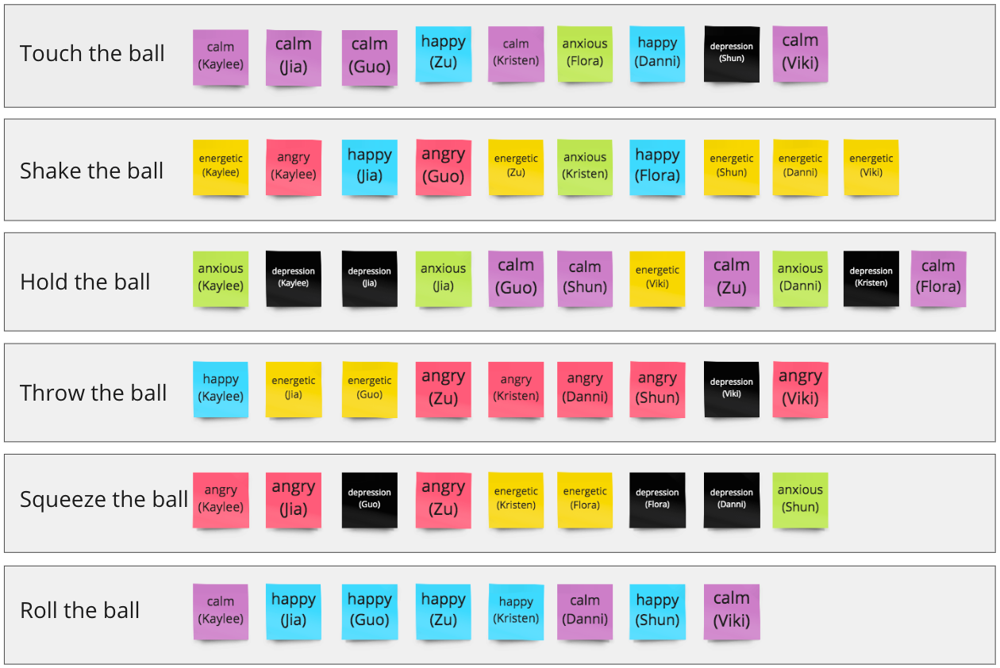
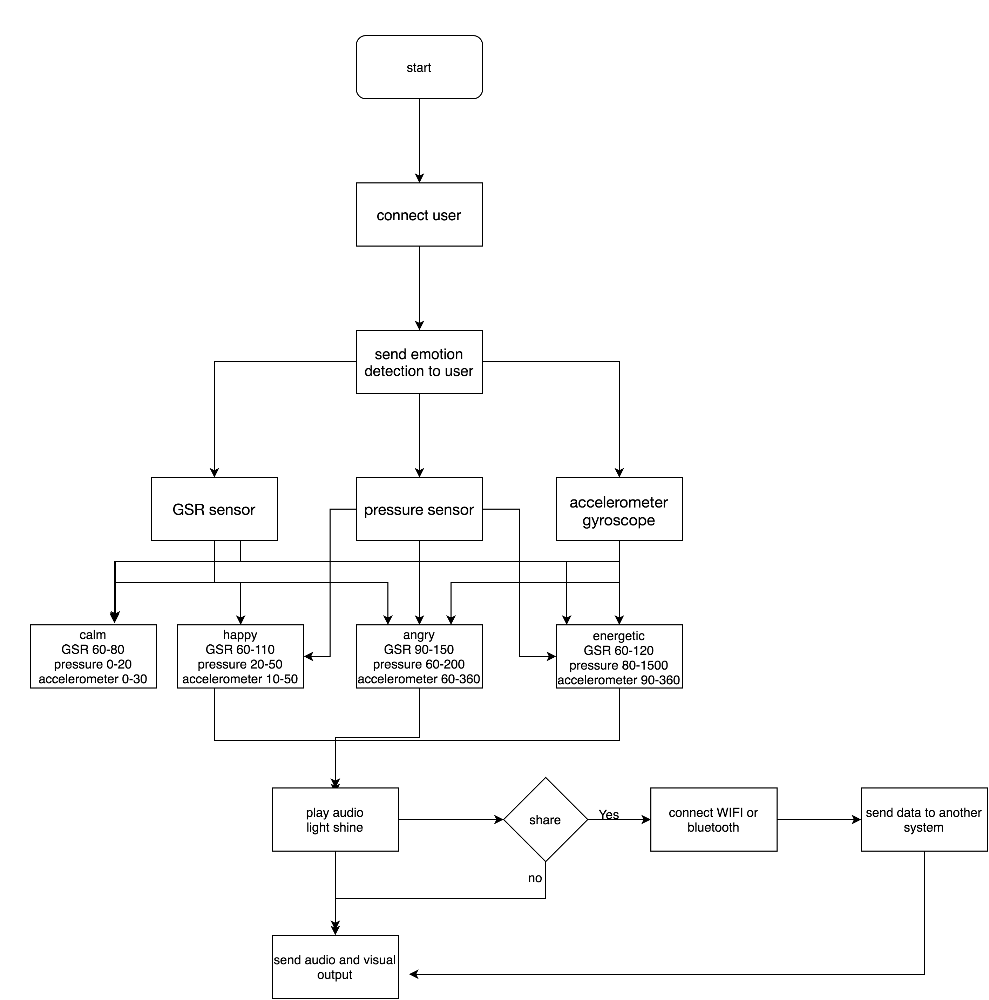
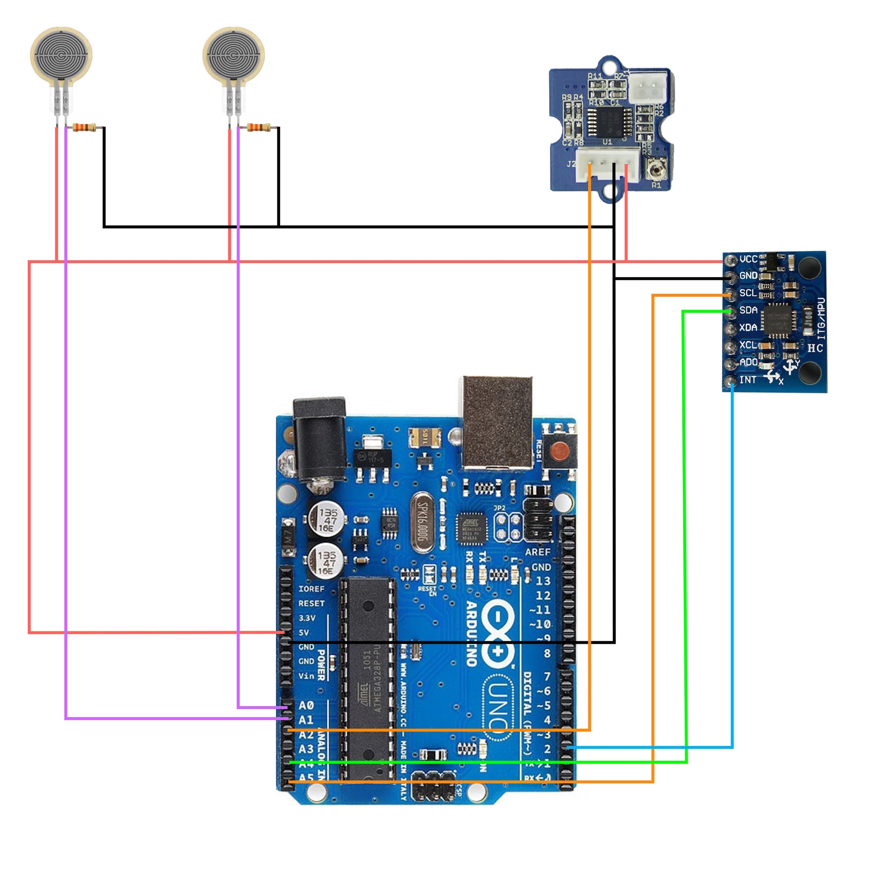
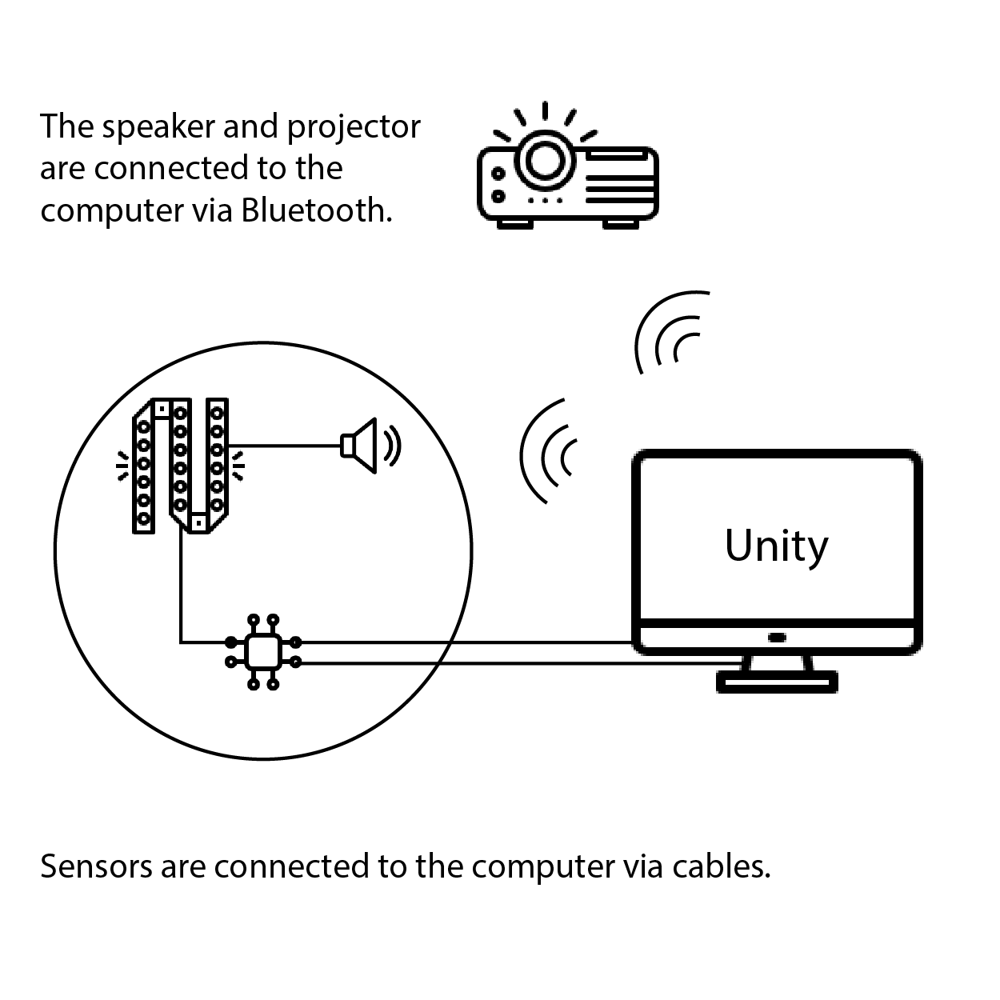
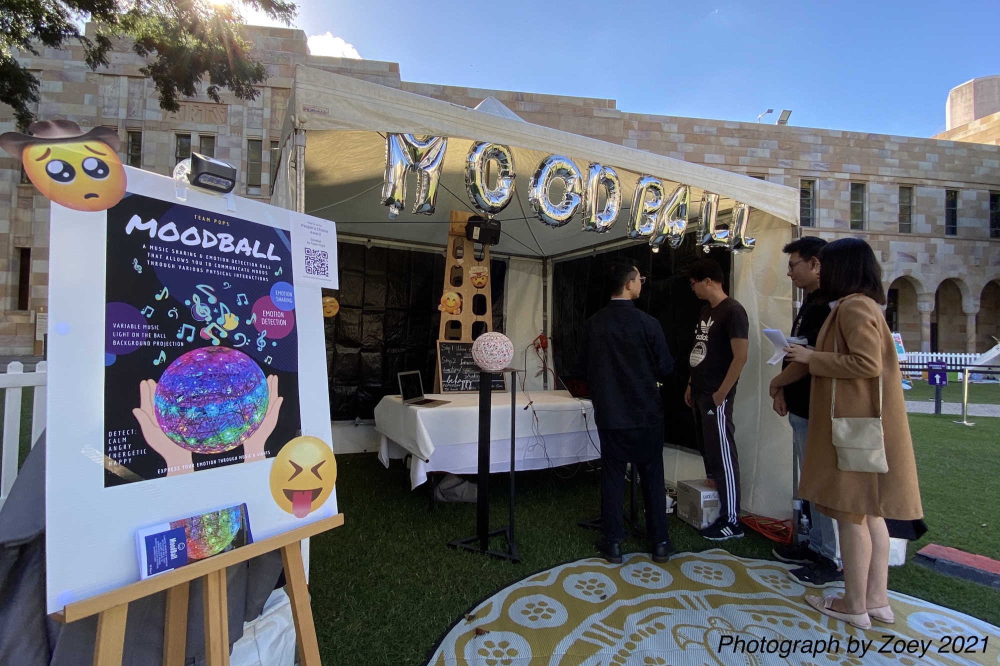

Interaction modes
Touch, squeeze, shake, rotate, and press create a direct physical vocabulary.
Physical computing / Emotion interaction / 2021
A touchable music-sharing object that senses physical interaction and translates it into light, sound, projected visuals, and a remote emotional signal.
01 / Brief
MoodBall began with a question: could music become a physical, shared language between people in different places? The concept combines a tactile object with sensing, sound, light, and projection so that emotion can be expressed through interaction rather than a screen.
Users touch, squeeze, shake, rotate, or press the ball. Sensor values are interpreted as an emotional state, which changes the music and visual feedback. A paired ball can replay the same signal for a remote friend or family member.
Touch, squeeze, shake, rotate, and press create a direct physical vocabulary.
Pressure, galvanic skin response, and accelerometer data inform the response.
Calm, happy, angry, and energetic states map to music, colour, and projection.
02 / Interaction system
The ball invites expressive gestures instead of menu selection or verbal disclosure.
Multiple signals are combined to avoid relying on one ambiguous interaction value.
Music, coloured light, and projected motion make the response immediate and immersive.


03 / Design process
World Cafe sessions and precedent research mapped music, physical interaction, remote connection, and emotional wellbeing.
Scenarios and storyboards tested how a personal object could communicate mood between people with close relationships.
Body-storming and evaluation activities connected gestures with perceived emotional states and exposed ambiguous mappings.
The final installation integrated the ball, sensors, music, LED feedback, and Unity projection for a public demonstration.



04 / Prototype architecture



05 / Outcome
Visitors understood the core interaction quickly and were drawn to the combination of music, light, and projection. The public test also showed that the sensor thresholds did not respond equally to every age group or interaction strength.
That limitation became the most useful design finding: emotion should not be treated as a single fixed classification. Future iterations would require adjustable thresholds, clearer feedback about uncertainty, and more ways for users to correct the system.

Player unavailable in this browser? Watch directly on YouTube ↗